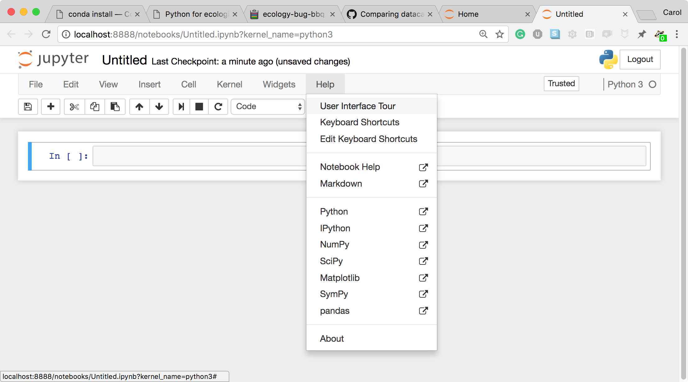
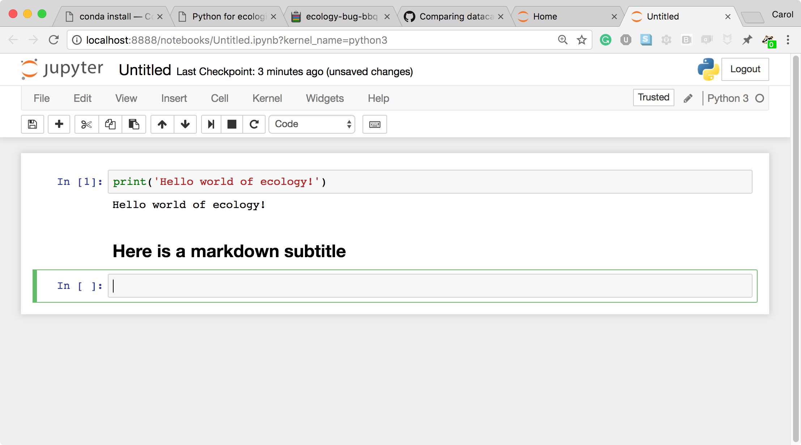
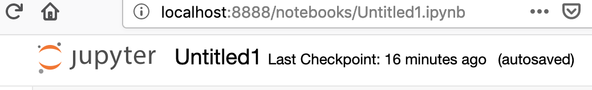
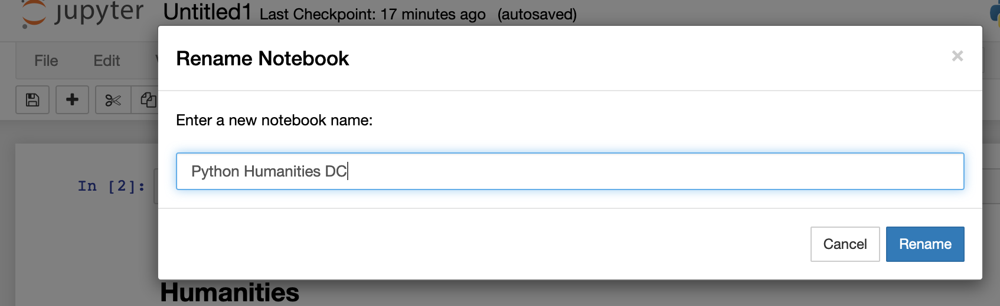

Alpha
This lesson is in the alpha phase, which means that it has been taught once and lesson authors are iterating on feedback.
Python for Humanities
Summary and Setup
Python is a general purpose programming language that is useful for
writing scripts to work effectively and reproducibly with data.
This is an introduction to Python designed for participants with no
programming experience. These lessons can be taught in a day (~ 6
hours). They start with some basic information about Python syntax, the
Jupyter notebook interface, and move through how to import CSV files,
using the pandas package to work with data frames, how to calculate
summary information from a data frame, and a brief introduction to
plotting. The last lesson demonstrates how to work with databases
directly from Python.
Getting Started
Data Carpentry’s teaching is hands-on, so participants are encouraged
to use their own computers to insure the proper setup of tools for an
efficient workflow. These lessons assume no prior knowledge
of the skills or tools.
To get started, follow the directions in the “Setup” tab to download data to your computer and
follow any installation instructions.
Prerequisites
This lesson requires a working copy of Python.
To most effectively use these materials, please make sure to install
everything before working through this lesson.
For Instructors
If you are teaching this lesson in a workshop, please see the Instructor notes.
Data
Data for this lesson is from the Humanities Lesson data.
In this course, several data files will be used as examples. You can
download these example data files by right-clicking on the following
links and selecting “Save as” (or clicking on the link, then
right-clicking on the file and selecting “Save as” if you are on a
windows machine). You should save them in a memorable location, as you
will need to tell Python where they are later.
Python is a popular language for scientific computing, and great for
general-purpose programming as well. Installing all of the scientific
packages we use in the lesson individually can be a bit cumbersome, and
therefore recommend the all-in-one installer Anaconda.
Regardless of how you choose to install it, please make sure you
install Python version 3.x (e.g., 3.6 is fine).
Software
Python is a popular language for
scientific computing, and great for general-purpose programming as well.
Installing all of the scientific packages we use in this lesson
individually can be a bit cumbersome, and therefore we recommend the
all-in-one installer [Anaconda][anaconda].
Regardless of how you choose to install it, please make sure you
install Python version 3.x (e.g., 3.6 is fine).
For installing these packages we will use Anaconda or Miniconda. They
both use Conda, the main
difference is that Anaconda comes with a lot of packages pre-installed.
With Miniconda you will need to install the required packages.
Anaconda installation
Anaconda will install the workshop packages for you. You only need
one of the two.
Download and install Anaconda
Download and install Anaconda. Remember to
download and install the installer for Python 3.x.
Miniconda installation
Miniconda is a “light” version of Anaconda. If you install and use
Miniconda you will also need to install the workshop packages.
Download and install Miniconda
Download and install Miniconda following
the instructions. Remember to download and run the installer for Python
3.x.
After typing the command jupyter notebook, the following
happens:
A Jupyter Notebook server is automatically created on your local
machine.
The Jupyter Notebook server runs locally on your machine only and
does not use an internet connection.
The Jupyter Notebook server opens the Jupyter notebook client,
also known as the notebook user interface, in your default web
browser.
The Jupyter notebook file browser
To create a new Python notebook select the “New” dropdown on the
upper right of the screen.
The Jupyter notebook file browser
When you can create a new notebook and type code into the
browser, the web browser and the Jupyter notebook server communicate
with each other.
A new, blank Jupyter notebook
Under the “help” menu, take a quick interactive tour of how to
use the notebook. Help on Jupyter and key workshop packages is available
here too.
 User interface tour and Help
The Jupyter Notebook server does the work and calculations, and
the web browser renders the notebook.
The web browser then displays the updated notebook to
you.
For example, click in the first cell and type some Python
code.
A Code cell
This is a Code cell (see the cell type dropdown
with the word Code). To run the cell, type
Shift-Enter.
A Code cell and its output
Let’s look at a Markdown cell. Markdown is a
text manipulation language that is readable yet offers additional
formatting. Don’t forget to select Markdown from the
cell type dropdown. Click in the cell and enter the markdown text.
A markdown input cell
To run the cell, type Shift-Enter.
 A rendered markdown cell
This workflow has several advantages:
You can easily type, edit, and copy and paste blocks of code.
Tab completion allows you to easily access the names of things you
are using and learn more about them.
It allows you to annotate your code with links, different sized
text, bullets, etc. to make information more accessible to you and your
collaborators.
It allows you to display figures next to the code that produces them
to tell a complete story of the analysis.
Changing the Title
You can change the Notebooks’s title by clicking on the title
cell

Rename the folder in the box and click “Rename”

How the notebook is stored
The notebook file is stored in a format called JSON and has the
suffix .ipynb.
Just like HTML for a webpage, what’s saved in a notebook file looks
different from what you see in your browser.
But this format allows Jupyter to mix software (in several
languages) with documentation and graphics, all in one file.
Notebook modes: Control and Edit
The notebook has two modes of operation: Control and Edit. Control
mode lets you edit notebook level features; while, Edit mode lets you
change the contents of a notebook cell. Remember a notebook is made up
of a number of cells which can contain code, markdown, html,
visualizations, and more.